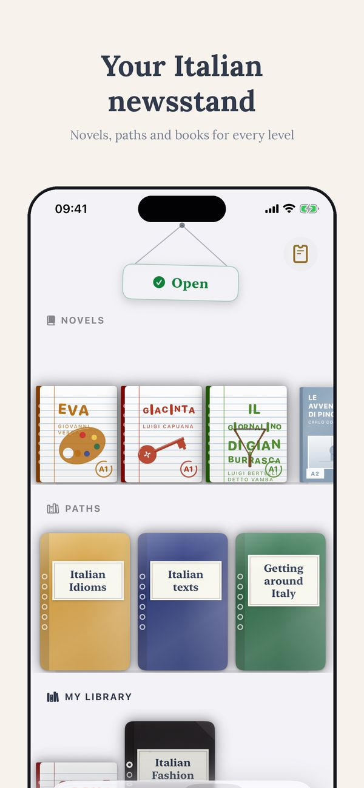
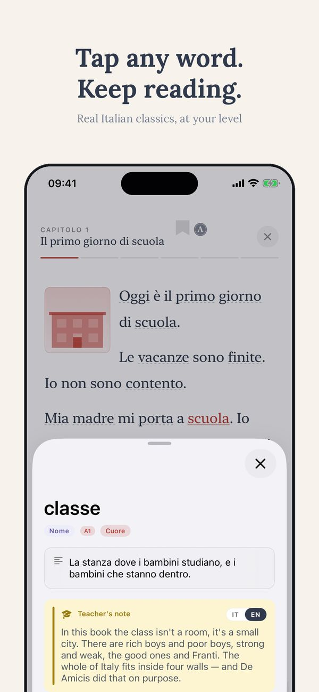
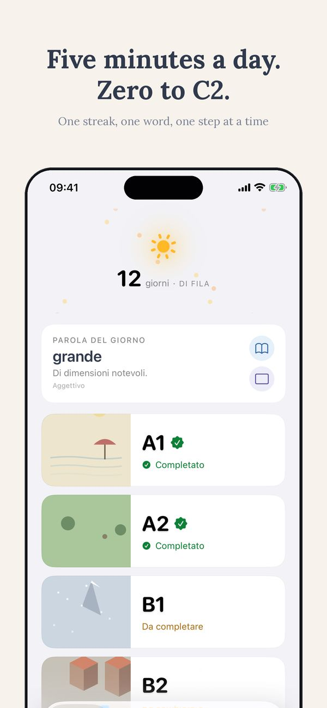
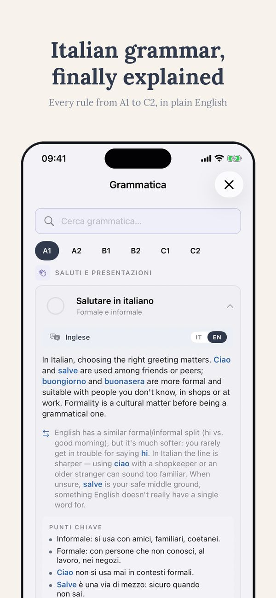
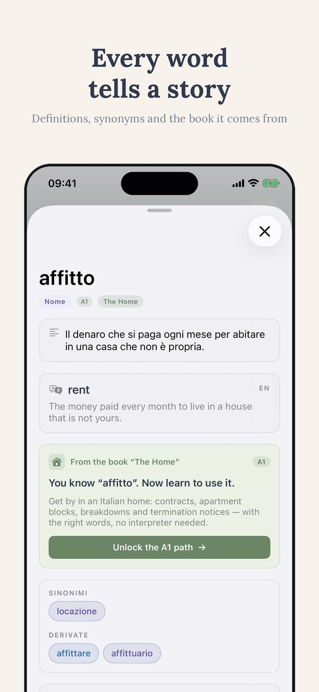
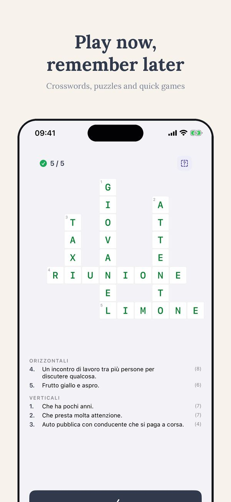

Mula sa unang salita hanggang kay Dante.
Italyano sa restaurant
Ang italyano na kailangan mo para umorder ng pagkain.
Bukas na ang kalahati ng A1, walang sign-up
Aloita A1:stä ↗︎Mahalagang salita
- menù — menu
- cameriere — waiter
- tavolo — mesa
- conto — bill
- acqua — tubig
- vino — alak
- pane — tinapay
- pasta — pasta
- pizza — pizza
- dolce — dessert / matamis
Mahalagang parirala
Un tavolo per due, per favore. — Isang mesa para sa dalawa, pakisuyo.
Il menù, per favore. — Ang menu, pakisuyo.
Vorrei una pizza margherita. — Gusto ko sana ng margherita pizza.
Posso avere dell'acqua? — Pwede pong makahingi ng tubig?
Il conto, per favore. — Ang bill, pakisuyo.
Iba pang oras
pranzo — tanghalian · cena — hapunan · colazione — almusal · caffè — kape · tè — tsaa
Matuto ng lahat sa Ti
Ang italyano ng araw-araw na buhay sa Ti.
Bukas na ang kalahati ng A1, walang sign-up
Aloita A1:stä ↗︎See Ti in action
The CEFR path, exercises, edicola and graded Italian classics — from A1 to C2, in 14 languages.






Higit pa mula sa Thuis Italiaans
Mga aklat ayon sa antas · Online na aralin sa Italyano · 700+ libreng pagsasanay